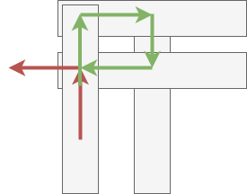

Map Path Planning Using A Star Search
Jacky Baltes
National Taiwan Normal University
Taipei, Taiwan
jacky.baltes@ntnu.edu.tw

Creating the Map on the Fly

- First we extract points from the map and then define roads between the points
import numpy as np
import math
def pixels_to_map( x, y ):
width, height = 625, 514
return x*100/width, 85 - y*85 / height
map_points = np.array( [
pixels_to_map( 305, 256 ),
pixels_to_map( 74, 363 ),
pixels_to_map( 578,116),
pixels_to_map( 438,71),
pixels_to_map( 370,200),
# Index 5
pixels_to_map( 565,192),
pixels_to_map( 311,381),
pixels_to_map( 184,438),
pixels_to_map( 210,296),
pixels_to_map( 80,472),
# Index 10
pixels_to_map( 66,197),
pixels_to_map( 108,207),
pixels_to_map( 156,216),
pixels_to_map( 298,220),
pixels_to_map( 68,90),
# Index 15
pixels_to_map( 110,88),
pixels_to_map( 150,84),
pixels_to_map( 228,72),
pixels_to_map( 193,24),
pixels_to_map( 262, 19),
# Index 20
pixels_to_map( 348,328),
pixels_to_map( 354,280),
pixels_to_map( 345,229),
] )
tmp_roads = [
[ 2, 3, 1 ],
[ 3, 4, 1 ],
# [ 0, 4, 1 ],
[ 2, 5, 1 ],
[ 4, 5, 1 ],
[ 5, 6, 1 ],
[ 0, 6, 1 ],
[ 6, 7, 1 ],
[ 7, 8, 1 ],
[ 7, 9, 1 ],
[ 1, 9, 1 ],
[ 1, 8, 1 ],
[ 1, 10, 1],
[ 10, 11, 1],
[ 11, 12, 1],
[ 12, 13, 1 ],
[ 0, 13, 1 ],
[ 10, 14, 1 ],
[ 0, 8, 1 ],
[14,15, 1],
[11,15, 1],
[15,16, 1],
[12,16, 1],
[16,17, 1],
[17,18, 1],
[18,19, 1],
[13,17, 1],
[3,19, 1],
[6, 20, 1],
[20, 21, 1],
[21,22, 1],
[4,22, 1],
[0,22, 1]
]
def generate_roads( roads, points ):
out = []
for frm, to, weight in roads:
p1x,p1y = points[frm]
p2x,p2y = points[to]
d = math.hypot( p1x-p2x, p1y-p2y )
out.append( [frm, to, d * weight, weight ] )
return out
map_roads = generate_roads( tmp_roads, map_points )
import matplotlib.pyplot as plt
import svgutils.compose as sc
fig=plt.figure( figsize=(9,9) )
ax = fig.add_subplot(1,1,1)
ax.set_xlim((0,100))
ax.set_ylim((0,100))
ax.set_aspect("equal")
ax.legend()
ax.plot([0,0], [0,100], 'b-')
#ax.plot([0,100], [0,100], 'g-', linewidth=3)
#ax.plot([100,0], [0,100], 'r-', linewidth=3)
ax.scatter( map_points[:,0], map_points[:,1], 20, color='blue' )
# origin_x, origin_y = pixels_to_map(0,0)
# ax.scatter( [origin_x], [origin_y], 100, color='red')
# origin_x, origin_y = pixels_to_map(0,512)
# ax.scatter( [origin_x], [origin_y], 100, color='red')
# origin_x, origin_y = pixels_to_map(512,0)
# ax.scatter( [origin_x], [origin_y], 100, color='red')
# origin_x, origin_y = pixels_to_map(512,512)
# ax.scatter( [origin_x], [origin_y], 100, color='red')
for i,p in enumerate( map_points ):
ax.text( p[0], p[1], f'P{i}')
for r in map_roads:
frm,to, _, _ = r
p1x, p1y = map_points[frm]
p2x, p2y = map_points[to]
ax.plot([p1x, p2x], [p1y, p2y], '-', linewidth=2, color='#303030')
fig.savefig('/tmp/plot.svg', transparent=True)
sc.Figure("8in", "8in",
sc.Panel(sc.SVG( '/content/BuildDir/reveal.js/assets/images/map1.svg' ).move(85,153) ),
sc.Panel(sc.SVG( '/tmp/plot.svg' ) )
).save('/tmp/compose.svg')
with open("/tmp/compose.svg", "r") as f:
compose_svg = f.read().encode('utf-8')
compose = addJBImage("compose", 0, 0, data=compose_svg, suffix="svg")
plt.close()

def heuristic_search( initial, successor_func, is_goal_func, heur_func, node_limit = 1000, depth_limit = None, ax = None ):
queue = [ ( initial, heur_func(initial), 0, [initial] ) ]
num_nodes = 1
max_queue = 0
sol = None
visited = [ ]
frames = []
#print("Search started", queue)
while( len( queue ) > 0 ):
# queue = queue[0:-1]
#print("Q", queue)
if ( len(queue) > max_queue ):
max_queue = len(queue)
current, current_h, current_g, chist = queue.pop()
visited.append( current )
if ax is not None:
#print('visited', visited )
frame = drawEnvironment( ax, env, visited )
frames.append( frame )
#print(' ' * len(chist), current, '[', chist, ']' )
#print("Num Nodes", numNodes)
#print( len(chist), depthLimit, printState( current ) )
if is_goal_func( current ):
sol = chist
break
if ( depth_limit is None ) or ( len(chist) <= depth_limit ):
print("current state", current, current_h, current_g, chist )
print("queue", queue)
children = successor_func( current )
#print("children", children)
for child in children:
c, cost = child
if c not in chist:
#print("Add child", printState(c))
h = heur_func( c )
g = current_g + cost
pos = 0
for i in range(len(queue)-1, -1, -1 ):
if ( queue[i][1] + queue[i][2] >= h + g ):
pos = i + 1
break
queue.insert(pos, (c, h, g, chist + [c] ))
num_nodes = num_nodes + 1
if ( num_nodes > node_limit ):
print("search terminated with num_nodes", num_nodes )
return ( num_nodes, max_queue, None )
# else:
# print("Depth cutoff", len(chist), ">", depth_limit )
return ( num_nodes, max_queue, sol, frames )
Iterative Deepening A* Search
Modelling Different Constraints
- Increase weight on certain roads, to discourage the use of these roads by the algorithm
- Increase/decrease the cost of certain actions
- UPS and other parcel delivery companies change their route planners so that at busy intersections, the driver will do 3 right turns instead of 1 left turn. The reason is that three right hand turns are safer and often faster in big intersections. 
import numpy as np
import math
def pixels_to_map( x, y ):
width, height = 625, 514
return x*100/width, 85 - y*85 / height
map_points = np.array( [
pixels_to_map( 305, 256 ),
pixels_to_map( 74, 363 ),
pixels_to_map( 578,116),
pixels_to_map( 438,71),
pixels_to_map( 370,200),
# Index 5
pixels_to_map( 565,192),
pixels_to_map( 311,381),
pixels_to_map( 184,438),
pixels_to_map( 210,296),
pixels_to_map( 80,472),
# Index 10
pixels_to_map( 66,197),
pixels_to_map( 108,207),
pixels_to_map( 156,216),
pixels_to_map( 298,220),
pixels_to_map( 68,90),
# Index 15
pixels_to_map( 110,88),
pixels_to_map( 150,84),
pixels_to_map( 228,72),
pixels_to_map( 193,24),
pixels_to_map( 262, 19),
# Index 20
pixels_to_map( 348,328),
pixels_to_map( 354,280),
pixels_to_map( 345,229),
] )
# Fast roards go through points 6, 0, 13, 17, 18
# Another fast road: 1, 8, 0, 22, 4, 3
tmp_roads = [
[ 2, 3, 5 ],
[ 3, 4, 3 ],
# [ 0, 4, 1 ],
[ 2, 5, 5 ],
[ 4, 5, 5 ],
[ 5, 6, 5 ],
[ 0, 6, 1 ],
[ 6, 7, 5 ],
[ 7, 8, 5 ],
[ 7, 9, 5 ],
[ 1, 9, 5 ],
[ 1, 8, 50 ],
[ 1, 10, 5],
[ 10, 11, 5],
[ 11, 12, 5],
[ 12, 13, 5 ],
[ 0, 13, 5 ],
[ 10, 14, 5 ],
[ 0, 8, 1 ],
[14,15, 5],
[11,15, 5],
[15,16, 5],
[12,16, 5],
[16,17, 5],
[17,18, 1],
[18,19, 5],
[13,17, 1],
[3,19, 5],
[6, 20, 5],
[20, 21, 5],
[21,22, 5],
[4,22, 3],
[0,22, 3]
]
def generate_roads( roads, points ):
out = []
for frm, to, weight in roads:
p1x,p1y = points[frm]
p2x,p2y = points[to]
d = math.hypot( p1x-p2x, p1y-p2y )
out.append( [frm, to, d * weight, weight ] )
return out
map_roads = generate_roads( tmp_roads, map_points )
for i,r in enumerate( map_roads ):
print('map_roads', i, r)
map_roads 0 [2, 3, 118.01884597178457, 5] map_roads 1 [3, 4, 71.8409394186053, 3] map_roads 2 [2, 5, 63.695245375824605, 5] map_roads 3 [4, 5, 156.14017866559155, 5] map_roads 4 [5, 6, 256.34332992997537, 5] map_roads 5 [0, 6, 20.693486096465964, 1] map_roads 6 [6, 7, 111.99924066466322, 5] map_roads 7 [7, 8, 119.24061277435197, 5] map_roads 8 [7, 9, 87.82124913207987, 5] map_roads 9 [1, 9, 90.25418903203052, 5] map_roads 10 [1, 8, 1220.9205814810898, 50] map_roads 11 [1, 10, 137.40593768025897, 5] map_roads 12 [10, 11, 34.602424809425436, 5] map_roads 13 [11, 12, 39.114420872364605, 5] map_roads 14 [12, 13, 113.64813614147268, 5] map_roads 15 [0, 13, 30.288722701486655, 5] map_roads 16 [10, 14, 88.48722919269366, 5] map_roads 17 [0, 8, 16.576953692486505, 1] map_roads 18 [14, 15, 33.64067050621432, 5] map_roads 19 [11, 15, 98.40794957322163, 5] map_roads 20 [15, 16, 32.170465468045535, 5] map_roads 21 [12, 16, 109.24946654809702, 5] map_roads 22 [16, 17, 63.183934950874914, 5] map_roads 23 [17, 18, 9.714307333047099, 1] map_roads 24 [18, 19, 55.35460189246226, 5] map_roads 25 [13, 17, 26.915633748171505, 1] map_roads 26 [3, 19, 147.21856331587423, 5] map_roads 27 [6, 20, 52.88299894688858, 5] map_roads 28 [20, 21, 39.9779210817961, 5] map_roads 29 [21, 22, 42.77951084359637, 5] map_roads 30 [4, 22, 18.734736705652416, 3] map_roads 31 [0, 22, 23.410776607894277, 3]